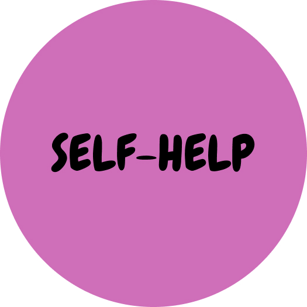
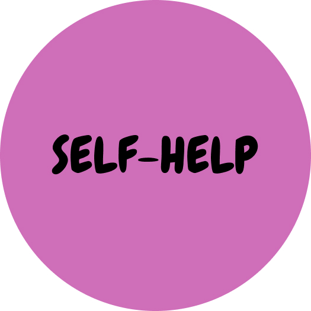

DEPRESSION
SLEEP DISORDERS
STRESS DISORDER
EATING DISORDER
ANXIETY DISORDER
FUN TIME
DEPRESSION
Click on the circles to learn more about depression
Depression (major depressive disorder):
A common and serious medical illness that negatively affects how you feel, the way you think and how you act.
Depression causes feelings of sadness and/or a loss of interest in activities you once enjoyed. It can lead to a variety of emotional and physical problems and can decrease your ability to function at work and at home.
More than just a bout of the blues, depression isn't a weakness and you can't simply "snap out" of it. Depression may require long-term treatment. But don't get discouraged. Most people with depression feel better with medication, psychotherapy or both.
Common myths about depression:
Myth 1: Most importantly, never ever try to self-diagnose yourself.
When you feel unhappy, you may believe you are clinically depressed. After all, most of us know what it is like to feel sadness or hopelessness for an extended amount of time. We go through times when we don’t sleep or eat normally, and some of us have had times when we have had thoughts related to suicide. These, however, do not necessarily mean that you are clinically diagnozed.
“The problem with self-diagnosing yourself with depression is that you may be less likely to seek much-needed interventions due to the stigma that surrounds mental health,” says Dr. Parkes.
Some people need treatments such as medication or therapy to help with depression, and they may not get it if they think they can cope with depression without professional assistance.
“If you do think you’re depressed, or know you are depressed, you should still seek out medical attention. In addition to providing treatments for depression, a doctor can tell if your depression requires medical intervention, or if your depression is related to another ailment,” Dr. Parkes adds.
Myth 2: Depression is all in your head.
Depression is a psychological, social, and biological disorder. It’s chronic and takes treatment to manage. Someone who is depressed can’t just shut it off or “suck it up.” The general public only sees the emotional side of depression like acting out or not acting like yourself. If we took time to realize that depression is a condition that causes physical issues as well, maybe we would see that depression is a real disease that takes time and treatment to manage.
Myth 3: Depression is only brought on by a traumatic event.
A life event, like the loss of a loved one, triggers feelings of sadness, loneliness and emptiness in everyone. However, those who deal with depression are more likely to experience those feelings for long periods of time and more frequently. A traumatic event does not cause depression; it only heightens an already existing issue in someone who deals with depression.
Myth 4: Depression is a weakness.
Depression does not discriminate. You do not decide to become depressed. The only reason depression is viewed as a weakness is that society has stigmatized the condition. Depression is a biological and psychological condition that has nothing to do with how strong you are.
Myth 5: Medication is the only way to manage depression.
Medication is only one type of depression treatment. Therapy is another option, and research shows that cognitive behavioral therapy (CBT) is especially effective in helping people with depression. Therapy includes talking one-on-one with a licensed therapist that listens and guides you to find your own answers or group therapy.
Myth 6: Everyone experiences depression in the same way.
People who experience depression may have physical differences in their brains than the average person. These differences don’t always act the same way in everyone’s brain. The changes in the brain, plus hormone changes, can influence the severity of moods, thoughts, and physical issues.
Symptoms of depression:
Depression symptoms can vary from mild to severe and can include:
- Feeling sad or having a depressed mood
- Loss of interest or pleasure in activities once enjoyed
- Changes in appetite — weight loss or gain unrelated to dieting
- Trouble sleeping or sleeping too much
- Loss of energy or increased fatigue
- Increase in purposeless physical activity (e.g., inability to sit still, pacing, handwringing) or slowed movements or speech (these actions must be severe enough to be observable by others)
- Feeling worthless or guilty
- Difficulty thinking, concentrating or making decisions
- Thoughts of death or suicide
Symptoms must last at least two weeks and must represent a change in your previous level of functioning for a diagnosis of depression.
Also, medical conditions (e.g., thyroid problems, a brain tumor or vitamin deficiency) can mimic symptoms of depression so it is important to rule out general medical causes.
Depression in college students:
According to a report on September 21, 2021:
- 21.6% of US college students said depression impacted their studies.
- 24.5% of US college students are taking some form of antidepressants, anti-anxiety and mood stabilizers, such as Prozac, Zoloft or Lamotrigine.
- 95% of US college counselors report that mental health concern is growing on their campus.
Data from March through May 2020 found:
- 40.9% of students reported depression.
- 30.5% said that their mental health negatively affected their academic performance.
- In September 2020, Active Minds revealed that 60.7% of students said they have experienced depression since the pandemic started. The pandemic made it harder for students to access a counseling center or mental health services on college campuses.
According to a study on CMU campus in 2019:
Depression levels rose during the semester with 58 percent of the participants indicating high depressive symptoms by the end of the semester.
So, you are not alone!
7 tips for self-help if you think you have a major depression:
Tip 1. Get Some Exercise (maybe just a short walk!)
Many scientific studies on depression find that exercise is as useful for relieving mild to moderate depression as medication. Exercise has multiple positive benefits beyond helping with depression symptoms such as improved cardiovascular health, weight loss, and reduced risk for developing many chronic diseases.
It can be quite challenging to exercise when feeling depressed, so it is best to start small and do something enjoyable. Taking a short walk each day, doing ten minutes of calisthenics at home, or putting on some music and dancing are all suitable types of exercise for reducing depression.
Exercise helps with the symptoms of depression because it increases brain chemicals called endorphins. Even a few minutes a day of mild exercise can improve mood by elevating endorphin levels.
Tip 2. Get adequate sleep
All bodies are different, but the National Sleep Foundation recommends that healthy young adults need between seven and nine hours of sleep each night. Getting enough sleep allows the body to recover which helps keep a person mentally and physically healthy. That’s why you’ve probably heard that you should get a “good night’s sleep” before a big day. It really makes a difference.
Tip 3. Practice mindfulness
It’s easy for college students to lose focus and feel scattered due to all the commitments they’re trying to balance, both socially and academically. That’s why mindfulness, which is defined as staying aware and conscious in the present moment, can be so helpful for individuals managing depression and other mental health issues. Mindfulness can be practiced through meditation, breathing techniques, participating in a yoga class, using a mindfulness app, or even listening to a mindfulness podcast. These are great ways to incorporate mental wellness and self-care into a daily routine.
Tip 4. Avoid drugs and alcohol
With the pressure placed on students to succeed academically, while still trying to fit in with the party culture on many college campuses, drug and alcohol use can easily become an issue. To add to that, the past year has caused many young adults to cope with their mental health with drinking and drugs. The Harvard School of Public Health determined in 2004 that 81.7% of students reporting poor mental health and/or depression drink alcohol. Substance abuse is often used as self-treatment for symptoms of depression and mental illness. This coping mechanism may work for short-term relief, but will make symptoms worse in the long run and should be avoided.
Tip 5. Improve nutrition
Eating well in college can be difficult. A student may even forget to eat due to studying for a test or having a jam-packed schedule. So, it may not seem realistic to make healthy choices when deciding what to eat. However, what you eat can make a big difference, and there are many simple, healthy snacks and foods that can help improve mental and physical wellness.
Tip 6. Strengthen connections with friends and family
Social connections play a critical role in supporting mental health. If a student is struggling with depression, friends or a trusted family member can be a good support system. Due to social distancing measures, it’s easy to feel isolated and disconnected from loved ones. This is an opportunity to get creative (e.g. virtual book clubs, video calls, online game nights) or return to some tried-and-true methods (e.g. letters, phone calls, group texts) to stay connected with those who matter most.
Tip 7. Make a Change in Routine
Making a change in routine does not need to be complicated. For example, instead of heading straight for the TV after getting home from work, commit to taking a short walk first. Instead of having an unhealthy dinner, make a small effort to eat a more healthy meal.
Changing routines can help to rewire the pathways of dopamine in the brain, an important brain chemical linked to feelings of happiness. The changes in routine do not need to be large to have a positive effect.
PLEASE ask for help immediately, if:
You are:
- Having suicidal thoughts;
- Might harm yourself or others;
- Feeling physically uncomfortable.
Carnegie Mellon on campus resources:
- Call Counseling and Psychological Services (CaPS) at 412-268-2922;
- Reach out to your advisor;
- Schedule a meeting with University Health Services (UHS) for stress consultations, substance use & recovery services, and health advice at 421-268-2157.
Click here to find the nearest mental health facility to you!
We are here! Let us help.

 
